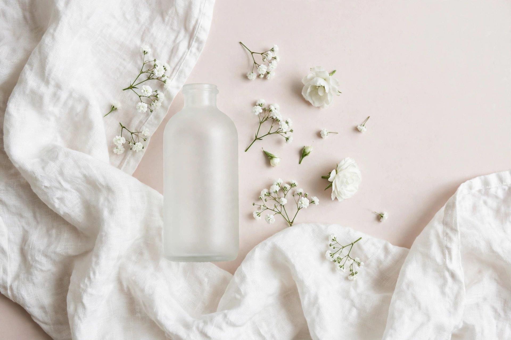

Musk and amber: the warm base of a scent stack

Every good scent stack needs a warm base, and that base is musk and amber. Vanilla is the top note people notice first, but musk and amber are what make it last. They sit close to the skin, they warm up as you wear them, and they hold the lighter notes in place for hours.
1. What musk smells like
Musk smells like clean, warm skin. It is soft and a little powdery. It never shouts. Glossier You is our musk layer: it blends with your own skin instead of sitting on top of it, so it smells slightly different on everyone who wears it. That is the point. Musk is the layer that makes a stack smell like you, not like a bottle.
2. What amber smells like
Amber is warmer and richer than musk. It smells like vanilla, resin and a little spice, with a golden, almost syrupy depth. La Vie Est Belle is our amber finish: iris and patchouli over vanilla and spun sugar, warm and sparkling at the same time. Amber is the layer people notice when you walk past. It has presence.
3. How to layer them
Put the musk on first, straight on moisturised skin: one spray on the neck, one on a wrist. Let it dry for five minutes. Then add the amber, one spray at the base of the neck. Musk first because it is lighter and closer to the skin. Amber second because it is heavier and carries further. Two sprays of each is the most you need.
4. Day vs evening
For the day, musk alone is enough, or musk with a light vanilla over it. It stays close and it suits offices, classrooms and small rooms. In the evening, add the amber. One extra spray turns the same stack into something warmer for dinner or a night out. You do not need a second perfume. You need one more layer.
5. When it goes wrong
Amber is the one to watch. Too much of it gets heavy, and on a hot day it can feel thick. If a stack feels like too much, the amber is usually the cause. Cut it to one spray, or skip it until the evening. Musk is forgiving. It is hard to overdo, and it fixes more stacks than it breaks.
The pair: Glossier You for the musk layer, La Vie Est Belle for the amber finish. One soft and close, one warm and present, and vanilla sits on top of both.
As an Amazon Associate I earn from qualifying purchases.
Also in this stack
The vanilla that sits on top of this base is Lattafa Yara, a creamy vanilla gourmand with vanilla, sandalwood and musk in the base.